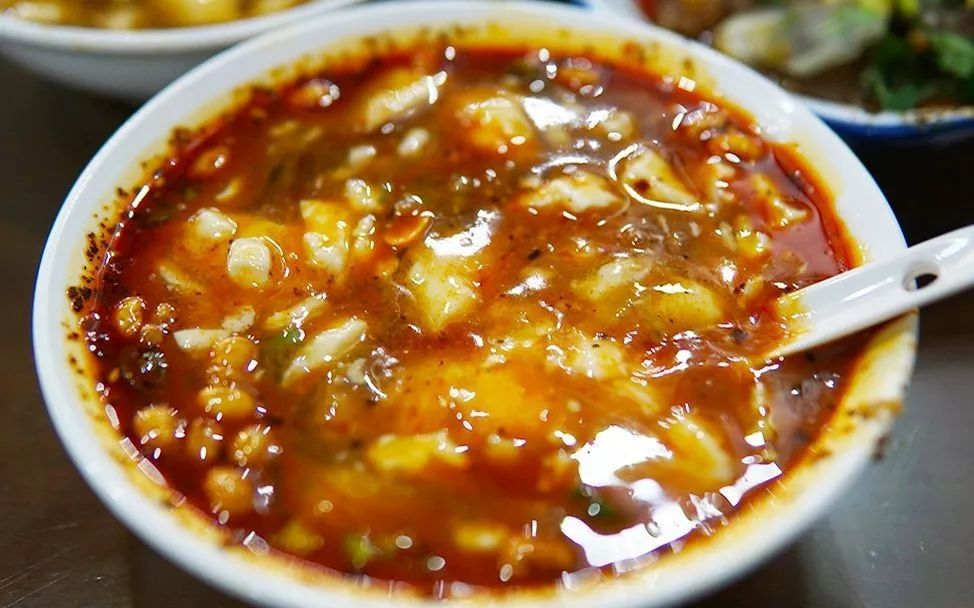
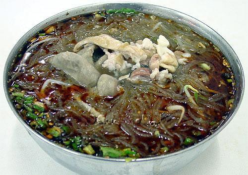

成都的川菜，菜式多样，口味清鲜醇浓并重，以善用麻辣著称，并以其别具一格的烹调方法和浓郁的地方风味，是中国四大菜系之一。
成都是名副其实的美食天堂，被联合国教科文组织授予“美食之都”，有很多具有代表性的特色美食。
1、夫妻肺片
色泽红亮，质地软嫩，口味麻辣浓香。观之青红碧绿，津河暗涌。一大青瓷盘新拌的肺片端上桌，红油重彩，颜色透亮；把箸入口中，便觉麻辣鲜香、软糯爽滑，脆筋柔糜、细嫩化渣。

2、酸辣豆花
酸辣豆花是四川成都、乐山等地有名的地方小吃。豆花在从前多以摊担形式经营，普遍流行于城市和农村，是一种历史悠久的民间小吃。当然，酸辣豆花是豆花的一个品种，用酱油、醋、辣椒面、味精调成味汁，放入事先熬烫的豆花，撒上芽菜末、油酥黄豆、大头菜末和葱花即成。酸辣豆花口味酸辣咸鲜，豆花细嫩，配料酥香，味浓滚烫，别有风味

3、龙抄手
龙抄手皮薄馅嫩，爽滑鲜香，汤浓色白，为蓉城小吃的佼佼者。龙抄手的得名与钟水饺不一样，并非老板姓龙，而是当初三个伙计在“浓花茶园”商议开抄手店，取“浓”的谐音“龙”为名，也寓有“龙腾虎跃”、生意兴“隆”之意。
4、钟水饺
钟水饺与北方水饺的主要区别是全用猪肉馅，不加其它鲜菜，上桌时淋上特制的红油，微甜带咸，兼有辛辣，风味独特。钟水饺具有皮薄（10个水饺才50克）、料精（上等面粉、剔筋去皮的精选猪肉）、馅嫩（全靠加工时掌握好温度、水分，肉馅细嫩化渣）、味鲜（全靠辅料和红油、原汤）的特色。钟水饺是全肉的，馅里没有菜，味道是辣中带甜，很好吃。
5、赖汤圆
赖汤圆迄今已有百年历史。老板赖源鑫从1894年起就在成都沿街煮卖汤圆，他制作的汤圆煮时不烂皮、不露馅、不浑汤，吃时不粘筷、不粘牙、不腻口，滋润香甜，爽滑软糯，成为成都最负盛名的小吃。现在的赖汤圆，保持了老字号名优小吃的质量，其色滑洁白，皮粑绵糯，甜香油重，营养丰富。
6、担担面
担担面是著名的成都小吃的之一，用面粉擀制成面条，煮熟，舀上炒制的猪肉末而成。成菜面条细薄，卤汁酥香，咸鲜微辣，香气扑鼻，十分入味。此菜在四川广为流传，常作为筵席点心。

7、冒菜
冒菜，是成都的特色菜，“冒”字在这里是动词。准备一锅麻辣鲜香的汤汁，把菜用一个竹勺装好，一般一勺就是一份。内容来源：爱成都。在锅里煮熟，然后盛到碗里，顺便再舀一勺汤汁，再撒上点香菜、葱花和四川特有的豆豉，就成了成都最有名最特色的小吃“冒菜”。
8、肥肠鸡
肥肠鸡，可谓是成都最有特色的美食之一。肥肠鸡好吃的秘诀在于店家用鸡汤煮肥肠，放入秘制酱料爆炒出来的肥肠鸡，肥肠绵软耙糯，鸡肉爽口细嫩，蘸上加入了高汤的秘制作料碟，味道一个爽字，麻辣入味，看着就有食欲。
9、肥肠粉
正宗的肥肠粉选用的是上等红薯粉、菜子油及干红辣椒、花椒等原料，锅汤则是用肥肠、猪骨头等以及多种佐料熬制而成。红油飘香，霉干菜、榨菜末星星点点，炒黄豆焦黄浑圆。粉条糯软，满口留香。夹起颤巍巍的肥肠送入口中，只觉卤香细腻，滑爽耐嚼，粉丝晶莹剔透、汤碗红白分明，入口麻辣鲜香，绝对让人难忘！成都人喜欢把肥肠做成一节一节的，然后捆成一个环形，这种一节一节的肥肠又被叫做“节子”。

10、锅魁
吃肥肠粉最好是要配着锅魁吃。四川堪称锅魁王国，各地城乡随处可见，不分雅俗人人都吃。八味别上看，四川锅魁品种繁多，有甜、咸、白味、五香等；从用料上看，则有芝麻、椒盐、葱油、红糖、鲜肉等等；从制作方法看，又有包酥、抓酥（抹酥、炒酥）、空心、油旋、混糖等等。单是成都地区常见的品种就有三十多个。街头巷尾的小吃摊上多有出售；名小吃店内有它的地位；甚至高级筵席上也能见到它的踪影。有以此为早点的，有用它打尖的，有以它配食风味菜点的，总之喜食者众。吃肥肠粉就的配上它，一口粉一口锅魁，满足啊，或者撕成小块，泡在汤里也很不错，味道交融。
11、芋儿鸡
芋儿鸡，可谓是四川美食里的另一道色香味俱全的美食。将精选的鸡肉、芋头放在一起炖，配上花椒、葱、生姜等作料，当然，最重要的是少不红油。鸡肉滑润可口，芋头酥而不烂，入口即化的感觉实在让人难以忘记。
12、串串
“吃串串，数芊芊。”串串，是草根美食最大众化的体现，它实际上是火锅的前身或者另一种形式，所以人们又往往称其为小火锅。而在北方，串串多表现为麻辣烫的形式，以其独特的魅力和鲜明的特色遍布于全国众多城市，可以说只要有人的地方就有麻辣烫的存在，甚至在一定程度上，麻辣烫已成为四川味道的代表。
13、豆奶
豆奶，一般是吃串串时的'必点饮料，也是很多四川人儿时的回忆啊。
14、兔头、兔丁
在四川话里，把“吃兔头”叫成是“啃兔头”。在成都，吃兔头已经成为了一种习惯。当初的兔头就像当初的夫妻肺片一样，是边角废料，常常用小锅煮着，沿街叫卖。兔头上的肉比兔子其他部位的肉都要细嫩，而五香兔头，味道鲜香，色泽红润，是一种角色美味。
麻辣兔丁，单就制作上就分为拌制、炸收等多种烹饪技法，麻辣鲜香，是佐酒佳肴，回味丰富口感酥香。
15、叶儿耙
叶儿粑又叫艾馍，原是川西农家清明节的传统食品。1940年，新都天斋小食店将艾馍精心改制，更名为叶儿粑。制作叶儿粑选料考究，工艺精细，具有色绿形美、细软爽口的特点，为四川名小吃之一。用糯米粉面包麻茸甜馅心或鲜肉咸馅心，外裹鲜橘子叶，置旺火蒸。特色是清香滋润，醇甜爽口，咸鲜味美。
16、粉蒸肉
粉蒸肉，糯而清香，酥而爽口，软、嫩、甜、香、咸，滋味丰富，食性温和。以主料带皮花肉加稻米和其他调味料制作而成。“粉蒸肉”有肥有瘦，红白相间，嫩而不糜，米粉油润，五香味浓郁。成菜时以老藕垫底，色泽粉红，粉糯而清香，更为添色。
17、蛋烘糕
相传清道光年间，成都文庙街石室书院旁一位姓师的老汉从小孩办“姑姑筵”中得到启发，遂用鸡蛋、发酵过的面粉加适量红糖调匀，在平锅上烘煎而成。因号起来酥嫩爽口，口感特别好，遂成为名小吃。现在的蛋烘糕有白糖、红糖拌和的，有蜂蜜调制的。

18、北川凉粉
在四川，最有名的凉粉莫过于北川凉粉。北川凉粉发源于南充市，问世于清朝末年，以其独具红辣味醇、鲜香爽口的川味风格饮誉巴蜀，流传至今。

19、伤心凉粉
据说是因为“吃的人都会被辣得流下眼泪而得名”。佐料“色泽鲜亮”，凉粉“爽口滑嫩”，小米椒威力巨大，真是让人“一把眼泪一把鼻涕”，“越吃越伤心”。一定要再来碗“甜甜”的开心冰粉“才能化解”。

20、三大炮 粽子
三大炮是著名的四川小吃，主要由糯米制成，由于在抛扔糯米团时，三大炮如“弹丸”一样，发出“当、当、当”的响声，故名“三大炮”。吃时配以“老鹰茶”，别有风味。由于案板一边放有钢碟，因击打案板而震动时发出金属响声，三坨糍粑早已飞向对面斜靠的竹簸上滚入下面装满芝麻粉、黄豆粉的竹簸中，另一人将三坨糍粑捡入盘中（此时糍粑已自然地裹上了一层粉末），再浇上浓汁，送于食客手中。

21、担担面
四川担担面是四川省成都市和自贡市的一道传统小吃，属于川菜系，该菜品起源于自贡市 ，由面粉、红辣椒油、芝麻酱、葱花等材料制作而成，是“中国十大面条”之一。 担担面成菜后，面条细薄，卤汁酥香，咸鲜微辣，香气扑鼻，十分入味。此菜在四川广为流传，常作为筵席点心。